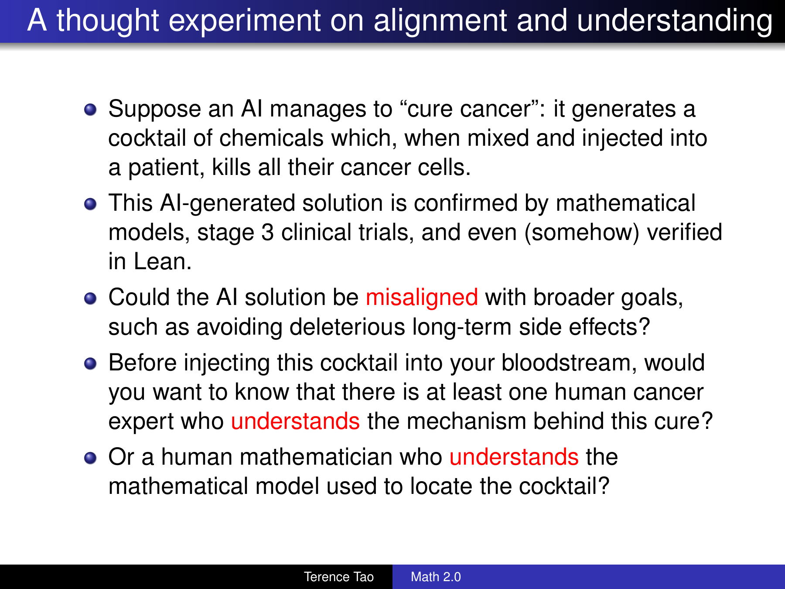

AI as a bubble shaped wrecking ball. That is our reading of the pattern.
The spending and expectations can be a bubble. The machinery being built inside it can still demolish the assumptions supporting other businesses. AI may eventually face its own reckoning. It may grow into expectations that look absurd today. Before either outcome settles the argument, it is giving people the means to knock down other people's toll booths.
The first targets are software whose useful behavior can be described and reproduced, and advertising that depends on bringing a human into an environment designed to sell their attention. Beyond them are professional arrangements built around the high price of intelligence: mathematics, medicine and law. Our prediction is that AI will puncture those rents before the argument about its own valuation is finished. We also think that is a good outcome worth helping to produce.
The mechanism can be surprisingly small. A prompt that makes a personal web page. Your news, videos and sources, without the advertising feed. A local library that keeps the media after the original link disappears. Instructions someone else can copy, translate and adapt to make their own version.
At another scale, organized teams are rebuilding complex applications in public. PhotoCraft is one of them. The interesting evidence is the working software and the machinery for improving it: reports, reproducible failures, repairs and tests that make the next version better. Calling an early version rough does not explain away that machinery.
We can examine these mechanisms, measure the changes and make predictions from them. That is what the wrecking ball describes. The object may look like a bubble to an investor. It feels rather more solid when it hits a rent someone expected to collect forever.
Here is the sort of prompt we mean. The source list changes from person to person. The outcome does not need a venture round.
Make me a personal web page that brings together the content I choose. Read the blogs, feeds, channels and research sources I give you. Each morning, show me what matters, group repeated stories, explain the useful context, and link every item to its original sources. Let me read the original material in a clean view without advertisements, autoplay or engagement prompts.
Download the YouTube videos and podcasts I select from sources I can access. Keep the actual media in my local library, with its title, creator, date, original URL, description and available transcript or subtitles. Make it searchable and playable from my page. Preserve redundant backups and check that files can be restored. A bookmark to somebody else's server is not an archive.
Bring me useful things I would otherwise have to hunt for: new papers, software releases, newsletters, long interviews, local events and the weather. Suggest relevant sources, including sources in other languages, and explain why they belong. Give me a finite morning briefing, with an optional audio version and links that jump to each story. Let me change what it follows and how it presents the result. Keep my collection and preferences portable. Build this around my needs, without turning the page into another feed designed to keep me there.
That is a prompt. A description of a better relationship with information, expressed in language another person can adapt. The resulting software is an implementation. The instructions are what travel.
One person wants a researcher’s reading desk. Another wants a local affairs briefing. Another follows repair tutorials, farming methods, films, astronomy and a football club. They do not need to become customers of the same startup. They need a system capable of turning their requirements into something that works for them.
The old web sells the same room to everyone, then rearranges it to suit the advertiser. A personal web can be rebuilt around the person who lives in it.
A great deal of software as a service sells a familiar function inside an increasingly unpleasant arrangement. The useful part might be a form, a calendar, a dashboard, a document workflow or a search box. Around it accumulate seats, tiers, upgrade notices, restricted exports, changed terms and features placed just beyond the plan you already bought.
The customer understands the function. What they lacked was an economical way to obtain it independently. Writing a specification, finding a developer and maintaining a bespoke application could cost more than tolerating the supplier. The supplier monetized that difference. Every unnecessary annoyance spent some of the customer’s inability to leave.
AI attacks the cost of leaving. The customer can describe the part they use, ask for an independent implementation, and test it against their actual work. The replacement does not need the vendor’s entire history. It needs to do the job the customer wanted before the vendor attached a business model to every button.
The really vulnerable software is the software whose requirements fit comfortably into a conversation. If a service’s essential value can be expressed in a few pages, intelligence capable of turning those pages into working machinery changes its price. A subscription built on the difficulty of making the machinery faces a customer who can now ask for it.
That is a bubble in artificial scarcity. The useful function was never as scarce as the recurring bill suggested. The scarce part was the customer’s practical ability to reproduce it. That is what is changing.
Sharing a replacement application asks other people to accept your implementation. Sharing the prompt lets them regenerate the useful behavior around their own circumstances. They can change the language, the fields, the storage, the layout and the machine it runs on. They can ask their model to explain it, repair it or build it differently.
The prompt becomes a portable account of what the tool is supposed to do. Include the examples that establish whether it works, the imports it must accept and the exports it must produce. The next person can improve those instructions. A discovered mistake becomes a better requirement. A useful adaptation becomes a sentence somebody else can reuse.
There will still be code. There will still be people who prefer a ready-made program. But the act of sharing does not require maintaining one official product for everyone, staffing its support queue and reproducing the organization it competes with. The shared object can be small enough to send in a message.
This changes the economics of an irritating feature. A customer once endured it alone. Now the description of how to remove it can travel, and every recipient can ask an agent to instantiate the alternative. The vendor’s annoyance supplies the motivation; the prompt supplies the route out.
In McKinsey’s 2026 survey, thirty-two percent of respondents reported that their organizations had already decided against buying at least one software product or feature because they could build it internally with coding agents. That is a self-reported purchasing decision, not a count of bankrupt companies. It is also exactly where this change enters the economy: the sale that never happens.
PhotoCraft is the Photoshop-style image editor from ArtCraft's growing collection of creative applications. The team describes its method as clean-room implementation from public specifications and observed behavior. Its source is available under permissive licenses, and the applications run on the user's own machine.
This is an organized project, not a single prompt pretending to have replaced every professional workflow. It shows what happens when people organize AI-assisted engineering around an application they want to own. The personal page and the complex creative application occupy different points on the same path toward making useful capability easier to reproduce.
The architecture matters. The editing engine is separated from the interface. Actions become commands the interface and automation can both invoke. An agent can work against explicit operations instead of guessing at an opaque screen. A reference renderer gives the accelerated renderer something concrete to be checked against.
Its contribution rules require tests with changes, including malformed-file and round-trip checks for format work. There is a specified place to put a fix and a way to check whether it damaged something else. That organization turns additional intelligence into useful work instead of a larger pile of disconnected demonstrations.
A Discord report about an image changing size during a Curves preview entered the public tracker on October 14. A fix was proposed about twenty minutes later and merged about ninety-eight minutes after submission. It included regression tests for the underlying scaling and the preview. That fix is on the development branch, after the current release. The distinction tells us exactly where the work stands.
The valuable object is more than an editor. It is an editor attached to a process that turns use into repair. The team has already given users something Adobe's Photoshop does not give them: the whole implementation, available to inspect, change and keep without maintaining a subscription.
The October 13 Creative Bloq review reported rough selection, missing previews and HEIC trouble in PhotoCraft, harsh sharpening in LightCraft, and camera-codec and performance problems in FilmCraft. Those are useful things to investigate. They become a poor forecast when a list of current defects is treated as a reason the project cannot matter.
Follow the defects. PhotoCraft's HEIC implementation merged on October 7 and is included in the code behind the current release. Official builds enable it. The review's prose does not identify the tested release, so it cannot tell us why that particular installation failed. It certainly cannot establish that HEIC is beyond the project's reach.
The report of a minute-long freeze when choosing the Type tool leads to an equally specific repair. Font scanning was moved off the interface thread. That change is in the current release. The problem was work happening in the wrong place, not an intrinsic limit imposed by AI-generated software.
There is also a concrete brush optimization. Every pointer event had copied the samples for a large brush tip. The patch shares those samples instead. In the contributor's focused measurement, preview work for a large sampled tip fell from 3.80 milliseconds to at most 0.01. That measures one operation, not the entire painting experience. It identifies a cost, removes it and checks the result.
Large-brush and cursor-lag reports still have open work. LightCraft has sharpening and diagnostic-overlay patches under review. FilmCraft's released code contains proxy creation, while important camera-codec and project-interchange gaps remain. This is an engineering work list with different states, not a magic incantation that declares every bug fixed.
The lazy inference is to leap from a broken operation to a permanent verdict. A useful review gives us a version, a file, a reproduction and a criterion for a retest. In this kind of project, that report can become the next patch. Criticism that feeds the repair loop makes the alternative stronger.
Great today, and the worst it will ever be. That is the trajectory we are backing, just as we back the improvement of AI itself. The reason is visible in the organization of the work. People retain the working versions, contributors can repair the next defect, and the repair becomes something everyone else can use. The incumbent no longer owns the decision about how much better the alternative is allowed to get.
Advertising has a related vulnerability. Its distribution machinery expects the person to arrive inside an environment the seller controls. The article brings you to the page. The video brings you to the platform. The update brings you back to the feed. Your interest in one thing becomes an opportunity to sell you several others.
The interface is arranged around that opportunity. Another recommendation. Another interruption. Another consent screen that somehow never means a lasting refusal. Another notification that pretends a commercial objective is something you urgently need to know. This is an attention prison with an excellent analytics department.
Put a system acting for the reader in front of it. The system collects the information, retrieves the selected media, groups the repetition and delivers what the person asked for. The person gets the result without spending the morning inside the commercial environment. The advertisement can be waiting in the corridor. We have no reason to walk down it.
Pew’s study of Google browsing in March 2025 found traditional-result clicks on eight percent of visits with an AI summary, versus fifteen percent without one. Those observations do not measure the future of advertising. They show the immediate pressure point: supplying an answer before the destination changes whether the human goes there.
Google can use that effect to keep people inside Google. A person can use it to leave the entire arrangement. The second possibility is the one worth building. The ad seller’s assistant and the reader’s assistant have different jobs.
We already have a small version of this. We choose the people and sources we want to follow. AI reads their activity first, does additional research, assembles a report, retains the links and passes the script into an audio workflow. The finished programme has stories we can jump to and sources we can inspect.
We do not have to experience the social feed in the order its owner selected. We do not have to inspect every repetition manually. We do not have to accept advertisements as the entrance fee to knowing what the people we follow said. The feed becomes material for our system.
The report ends. That ordinary fact is a radical departure from the product it replaces. We can learn what matters and go do something else. There is no requirement to manufacture a reason to keep scrolling after the useful work is finished.
A personal page extends the same relationship beyond a spoken briefing. Yesterday’s interview remains available. The research paper sits beside the discussion it produced. A video’s transcript is searchable. A release note appears when it changes a tool we actually use. A local event arrives while there is still time to attend it.
None of these needs is inherently an advertising opportunity. They are things a person wants to know or keep. AI lets us describe that distinction in operational terms and have software enforce it.
A link is a promise made by a machine you do not control. The video can disappear. The account can close. The platform can change the region rules, the search results or the terms. Years of carefully collected bookmarks can become an inventory of things you used to be able to see.
A personal library changes that relationship. Keep the selected file, its provenance and the useful accompanying text. Index the content. Make the subtitles searchable. Preserve a second copy and verify the backup. The creator can reorganize a channel without reorganizing your memory. The platform can lose interest without taking your reference collection with it.
The improvement extends beyond avoiding a pre-roll ad. A repair demonstration can remain available in the workshop when the connection is poor. A lecture can be watched on a train. An interview can be searched for the one explanation you remember. A collection can survive the disappearance of the interface that originally delivered it.
We have been trained to confuse access with possession because that confusion is profitable. A playlist on somebody else’s service feels like a library until the service removes something. A local collection with working backups behaves like the thing the word library promised.
The prompt can request this entire relationship. It can ask for the acquisition, the index, the player, the transcript and the backups. The person describes the outcome once, then improves the instructions as they learn what else they want to retain. There is no reason the friction of a platform should define the limits of their collection.
Preserve the original links because they help the reader examine a claim. Keep the creator’s name because provenance matters. Find the actual document because a summary can be wrong. Those are obligations to the quality of our own understanding.
They do not amount to an obligation to preserve a source’s existing business model. A reader does not owe an attention intermediary a daily visit because the intermediary built its revenue around one. A bad feed does not acquire a moral claim on our time by describing itself as the place information lives.
The source can also be wrong, repetitive, promotional or useless. A personal system should be able to say so. It should compare accounts, reach underlying evidence, follow a correction and discard the noise. Putting AI first is an opportunity to stop treating the loudest distributor as the editor of everything that follows.
People can directly support work they value. They can commission an investigation, pay a creator, subscribe to something useful or contribute their own observations. Those arrangements can develop around what people actually want. Keeping an advertising machine alive is not a prerequisite for allowing a better arrangement to exist.
The system we are leaving bundles the fact with the sales funnel, then presents the bundle as civilization. We can separate them. We can keep what informs us and reject what exploits us. Their preferred method of collecting money does not get a veto over that separation.
The wrecking ball reaches beyond the subscription bill. It reaches the professional arrangements built around expensive intelligence. Mathematics is giving us an unusually clear view of what happens when the scarce thing starts becoming abundant.
On October 6, OpenAI released an initial 722 mathematical manuscripts, grouped into 372 families of related results. Those numbers describe documents and families, not 722 independently verified discoveries. The repository distinguishes levels of verification, and its revision history records three withdrawals the next day after a sign error undermined a construction and dependent arguments. The remaining collection is still a substantial body of material to investigate. Verification is how we retain the gains while throwing out the errors.
Terence Tao makes this transition especially interesting because he saw useful AI coming. In June 2023, he predicted that AI integrated with proof verifiers, search and symbolic tools could become a trustworthy research co-author by 2026. He was preparing to use the machinery. Then the machinery began changing the conditions under which his entire profession works.
His blog hosted the Association for Human Mathematics statement on October 7. It called for mathematicians to discontinue work with OpenAI and rejected the company's account of the release as progress. This was an explicitly labeled guest statement, not a text we should falsely attribute to Tao himself. Its appearance on his platform nevertheless captures the atmosphere surrounding the release: the profession was being confronted with work it had not commissioned, arriving at a speed its institutions had not prepared to absorb.
We can understand the shock. We should challenge the proposed entitlement. A professional community can set standards for its journals, classrooms and awards. It cannot reasonably expect the rest of the world to preserve unsolved problems so that the old career machinery continues operating at its preferred speed.
Training matters. Credit matters. Clear explanations matter. Their value is a reason to improve how we teach, attribute and explain. Turning them into an embargo on finding answers protects the arrangement by preserving the obstacle. We have seen that move before.
In Numberphile's October 15 interview, Tao says the transition is sad and describes entering the new era unwillingly. We read that as grief for a professional world whose rhythms and rewards he knows intimately. For a moment, that grief seems to have pulled his priorities out of order: protecting the familiar process took precedence over what the new capability could make possible. That is our interpretation of the tension in his remarks. He also says exciting possibilities are opening. Later, around sixteen minutes, he credits a new arrangement of existing mathematical ideas that he doubts any single living mathematician would have assembled. He continues criticizing the companies and the release process. His recognition of capability is unmistakable.
That recognition brings him back into alignment with the direction we care about. The evidence gets to change what we expect of the machines. Welcome back, Terry. You were hardly away long enough for us to miss you. That is our reading of the useful convergence, not a claim that he adopted a political label or abandoned his objections.
We owe the same flexibility ourselves. Our February article about Tao leaned heavily on a division between machine execution and human insight. We should not turn that description into a protected border either. When the machinery begins producing combinations that surprise the experts, the model of the world needs updating. Our own prose gets no exemption.
One slide deserves a direct answer. It was publicly posted in Tao's Caltech deck, not leaked from a private meeting. Here is the original October 9 version, preserved from his repository's history.

The original assumes an AI-generated cure supported by models and clinical trials, then asks about long-term harms and whether a human understands the mechanism. The revised deck shifts toward a treatment that could exploit weaknesses in the trial or its model, and introduces an early-stage patient. These are different premises. Neither version literally orders patients to reject treatment. The deck also proposes extensive AI use to improve explanation, formalization and mathematical infrastructure. We support that work. Our criticism is of the reasoning invited by the cancer example, rather than a sentence Tao never wrote.
For a person dying of cancer, the present disease is part of the risk calculation. A future side effect is weighed against the possibility of having a future. A treatment does not become less useful because its discovery outran a human expert's ability to explain every step. Human understanding can improve the decision. It should have to earn its place through what it predicts, detects or prevents. It cannot simply serve as a ceremonial permission slip for staying alive.
This is where the original thought experiment is badly aimed. It gives us evidence of benefit, then pulls attention toward the discomfort of not understanding. It leaves the cost of waiting largely outside the frame. The patient cannot step outside that cost. Their disease continues while the professionals finish getting comfortable.
Medicine already works with incomplete mechanistic knowledge. An official acetaminophen-containing drug label says its analgesic mechanism has not been determined. The FDA's account of drug development describes clinical evaluation of safety and effectiveness, while requesting mechanistic information when known. Empirical evidence and an explanatory story do different jobs.
A well-conducted phase 3 trial does not establish that every patient will benefit or that every long-term harm is known. A Lean certificate verifies a formal claim under specified assumptions; it cannot certify that a biological model captures everything important about a body. If a trial was gamed, examine its data and design. If the treatment is toxic, measure the toxicity. Those are concrete reasons to investigate a treatment. The mere absence of a satisfying human explanation is a much weaker reason to withhold an otherwise demonstrably beneficial one.
Patients do not all make the same choice, and desperation is not evidence that a treatment works. But someone facing death can rationally accept risks a comfortable observer would reject. A philosophy of progress that forgets that person has lost sight of its purpose. We want the cure, the verification and the better explanation. We should build all three as quickly as we can, while refusing to make the slowest one an automatic veto over the others.
The medical case for acceleration is larger than a hypothetical cancer cure. It includes making competent analysis available before a disease becomes a crisis, shortening the search for useful molecules, and reducing the administrative work standing between a patient and care.
There are already measurements worth taking seriously. Microsoft's 2025 sequential diagnosis research turned 304 difficult NEJM cases into stepwise diagnostic tasks. Its best orchestrated configuration reached 85.5% accuracy. The researchers' account reports a mean of 20% for 21 practicing physicians across completed cases. It also states an important comparison condition: those physicians worked without colleagues, textbooks or AI. This was a benchmark of challenging cases, not a prospective trial establishing replacement of a working clinical service.
That is a significant result with a defined scope. Treating the scope honestly makes it usable. Repeating that doctors do many other things does not make the measured diagnostic advantage disappear. The productive next step is to test how much of it survives real clinical workflows and put the surviving advantage within reach of patients.
Drug development provides another kind of evidence. A randomized phase 2a study of rentosertib, published in Nature Medicine in 2025, tested an AI-discovered target and AI-designed molecule for pulmonary fibrosis. It enrolled 71 patients at 21 sites in China over twelve weeks. The highest-dose group showed a promising lung-function signal; the study also reported adverse events and withdrawals. This is an early clinical result requiring larger, longer studies, rather than a demonstrated cancer cure. It is also a reminder that the work is happening beyond the American technology press and American institutions.
Our prediction is that cheaper intelligence will expand the supply of useful medical reasoning and accelerate the search-and-test cycle for treatments. The remaining bottlenecks include physical experiments, manufacturing, clinical evidence and distribution. Those bottlenecks identify where to build next. They do not justify preserving today's scarcity of attention and access.
The outcome should be fewer people priced out of a careful investigation, fewer useful hypotheses abandoned because nobody can afford to explore them, and more time returned to the person with the illness. If every gain becomes another proprietary toll on the path to care, we will have improved the machinery while leaving the patient trapped. The wrecking ball needs to reach that gate too.
Law contains an enormous amount of expensive reading, comparison, drafting and revision. Those activities are becoming reproducible computational work. The person who needs them is often a tenant, employee, small business or defendant for whom the price of the first serious answer already decides the outcome.
The evidence has moved past anecdotes about passing an exam. In Legal Benchmarks' 2025 contract-workflow study, AI tools completed thirty drafting tasks also attempted by experienced in-house lawyers. Gemini 2.5 Pro had a 73.3% first-draft reliability rate; the human average was 56.7%. The organization's summary of the comparison puts the best individual human at 70%. That is a point estimate above the best tested lawyer on that measure, using last year's tools. Thirty tasks remain a small sample, mostly at junior-to-mid complexity, and the study used model-assisted grading with expert escalation. The result measures a specific kind of first draft.
Broader agentic research is advancing too. The Vals Legal Research Bench, updated October 12, puts its leading systems at 55.29% under strict all-pass grading. Its paper explains that this requires all necessary elements and valid cited authorities. A polished answer that misses a controlling point fails. That is useful pressure on builders to improve the whole workflow. These results do not establish a universal ranking above the smartest lawyer alive. They give us concrete work to automate and concrete failures to remove.
My prediction goes further: frontier agents will outperform even elite individual lawyers across an expanding share of research and drafting work. The ground underneath that prediction is already visible. They can retrieve material, compare authorities, generate alternatives and revise against criticism at a cost and speed that human billable time cannot match. Improvements can be distributed to every instance. Each exposed failure can become a new check. The human professional's knowledge stops being the only affordable path to a competent first analysis.
This should be good news. A tenant should be able to understand the lease before signing it. A worker should be able to compare the employer's claim with the actual rule. A small business should be able to obtain a serious contract analysis without first buying admission to a prestige hierarchy. The profession will still have arguments about authority, responsibility and procedure. Those arguments must serve the people needing justice, rather than turn a credential into a permanent monopoly on understanding their own situation.
The economic disruption can arrive well before autonomous courtroom representation is solved. Every hour of competent research or drafting that becomes cheap weakens a business model built on selling that hour at scarcity prices. Some firms will use the tools to improve service. Others will try to keep the saving and preserve the bill. We should build for the client who wants the capability.
Math, medicine and law share this pressure with software. We are learning to separate the useful intellectual function from the expensive arrangement that once delivered it. The next step is to make the function available on terms ordinary people can live with.
The usual American response to a threatened rent is to look for a legal instrument that can preserve it. When making the useful thing becomes cheaper, make permission to make it expensive. When people can leave the interface, claim an entitlement to control the route around it. The fallback business model is a restriction someone else has to enforce.
Expect that fight. Expect arguments that ordinary functions, compatibility, access and automated assistance must remain under the incumbent’s control. The attempt to turn technological scarcity into legal scarcity is the obvious defense of a rent intelligence has made unnecessary.
But the rest of the world is not waiting to become a customer of the American software industry. Different countries have different incomes, languages, institutions and reasons to resist imported dependence. A tool that is marginally worth rebuilding for a wealthy American office can be much more important where the recurring bill consumes a larger share of the resources available.
A prompt can be translated. Its requirements can be adapted. Its implementation can be generated with a different model and run on different infrastructure. A person in another country does not have to become an American company, seek American investment or adopt an American product’s priorities to obtain the function.
This is what a global perspective changes. The market contains people who make things, not merely people waiting to buy what Silicon Valley allows them to rent. Intelligence gives more of them the means to act on that fact.
A court can impose real costs. A restrictive law can damage real people. The political defense of these rents must be confronted. Treating it as the final word, however, gives one jurisdiction ownership of a technological future it did not create alone.
Even the legal treatment of software functions has never been uniform. In its 2012 SAS judgment, the European Court of Justice distinguished program functionality from the expression protected by software copyright. That decision is not a universal license covering every dispute. It is a concrete reason to stop treating the broadest possible American restriction as a law of nature.
Governments can also push in the opposite direction. The European Commission’s March 2025 interoperability decisions required measures opening specified iOS capabilities to third-party connected devices. State power can be used to widen an exit, as well as to board one up.
The prompt makes the containment problem harder. There is no need for one rival company to acquire all the customers. People can independently reproduce the behavior they need. They can modify the instructions, change the implementation and carry the useful specification somewhere else. A settlement with one supplier does not make that knowledge vanish.
The strategic response is to spread the capability and defend the ability to use it. Interoperability, portable data and independent implementations are part of the contest. We should want the rent to lose. The fact that it can buy an expensive legal defense makes the contest political; it does not make the rent socially necessary.
A prompt that only works inside one revocable account has not reached the destination. The next landlord will happily sell independence from the previous one, provided the customer accepts a permanent dependency on the replacement.
Keep the instructions. Keep the data and the media. Keep the examples that show whether the result is correct. Make changing the model an ordinary operation. Use powerful hosted intelligence to construct useful capability now, while reducing how much of that capability can be withdrawn later.
The supply of intelligence is already international. DeepSeek’s R1 release, from China, made its model weights available under an MIT license. Whatever one thinks of any particular company or government, the existence of independent model suppliers matters. The ability to run and adapt intelligence is not an entitlement granted exclusively by a handful of American firms.
The useful unit is a person with a specification and access to capable machinery. The specification can survive a model. The personal library can survive a provider. The desired function can be regenerated instead of remaining forever attached to the company that first supplied it.
That is why the prompt matters more than a new brand. It carries the intention across implementations. The point is to make the customer harder to capture each time the machinery improves.
An account of the future has to explain more than a screenshot. For software, track useful jobs completed, repeatable performance measurements, defect reports converted into tested fixes, and the time between those events. Distinguish an open patch, a merged fix and a released installer. A star count measures attention; a repair that survives the next release measures retained capability.
For the personal web, share the prompt and see whether other people can reproduce the useful result. Measure how much time they recover, how much advertising reaches them, what they stop buying, and whether their library and instructions move between implementations. Repeat that across languages, incomes and jurisdictions. A demonstration becoming an ordinary habit is the transition the business model should fear.
For mathematics, inspect the proofs, their assumptions and the corrections, then measure whether AI helps people extract reusable ideas from them. For medicine, distinguish benchmark performance from prospective patient outcomes and measure both benefit and harm, including the harm of delay. For law, compare complete, source-checked work on the same tasks, across jurisdictions and against the actual human alternatives. Count accuracy, cost, elapsed time and access.
The forecast gains strength as those loops deliver more useful work for less dependence. It loses strength if repairs fail to accumulate, independent reproduction stays impractical or people remain unable to leave. We can revise our estimate of the speed while continuing to work for the outcome. Put your faith in the future by making predictions from what is already working, exposing those predictions to measurement, and building the next improvement. Wanting the rent to collapse does not require inventing a result.
The question is no longer whether the old arrangement is pleasant. We know what it is like to be charged for access to our own working life and interrupted while trying to learn something. We know the feeling of a tool becoming more annoying after we have become more dependent on it.
Now the annoyance can become a specification. Describe the outcome without the extraction. Give the instructions to a capable system. Improve them until the result works. Share the prompt. Let another person make their own version, in their own language, with their own sources, on their own terms.
That loop attacks two industries together. It makes reproducible software less rentable and makes human attention harder to deliver to an advertiser. The software creates the private page; the private page deprives the attention business of the compulsory audience. Better intelligence makes both parts easier.
This will not wait for every incumbent to admit what is happening. An avoided purchase produces no cancellation announcement. A reader whose system fetches the useful material first does not have to write a farewell letter to the feed. The loss begins in decisions the old dashboard was never designed to count.
That is the smoke. People are learning to obtain the useful thing without accepting the arrangement built around it. The prompt can carry that lesson to the next person before the landlord has finished explaining why leaving is impossible.
Our reading is that this bubble will knock down other bubbles before its own shape is settled. The world has better uses for its intelligence than preserving a bill for unnecessary dependence. We intend to help it find them.
Share the prompt.
c4573.org builds tools for people who want to own their stack. Read Ghost GDP for the distribution problem, The Severance Protocol for open alternatives to extractive platforms, or browse our tools.